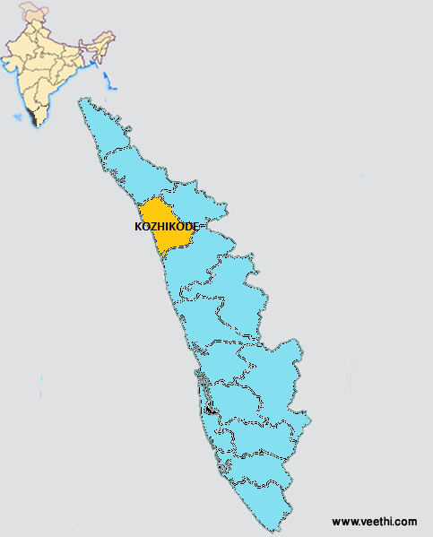
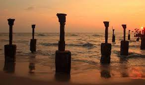
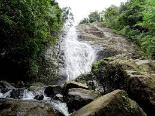

The legendary seaport where Arab, Chinese and East African traders once converged, Kozhikode was previously the most crucial region of the Malabar Coast. Vasco da Gama landed on its shores in 1498, shooting the region to global fame. Once the capital of the influential Zamorins and a prominent trade and commerce centre, the winds of change have swept over this charming coastal land. The whiff of history continues to permeate the lanes, bazaars and business hubs of Kozhikode
Kozhikode
General Information
Area: 2,344 km²
Population: 32.5 lakhs
Elevation:1m
Official Language: Malayalam, English

Kozhikode Beach
Situated on the Malabar coast and endowed with natural beauty, Kozhikode beach should be a must in the itinerary of your visit to the city. This beach is renowned for the sunsets that tourists throng here to enjoy. Though the water is muddy and not suitable for swimming, still the stunning view of the Arabian Sea that the lighthouse offers more than compensates for the shortcoming.

Kakkayam Dam
Kakkayam Dam is a famous picnic spot around Kozhikode because of its scenic beauty and plenty of choices for outdoor activities. Though the dam is small in size, it more than compensates with the small waterfalls around it. Take a peek at the varieties of animals and birds that inhabit the place.

Thusharagiri Fall
Enjoy the breathtaking beauty of Thusharagiri Fall when you pay a visit to Kozhikode. Two streams originating from the Western Ghats meet at this point to create the Chalipuzzha River. The river further trifurcates to create three waterfalls and the free-falling water creates a mist, thus giving the name “Thusharagiri”.